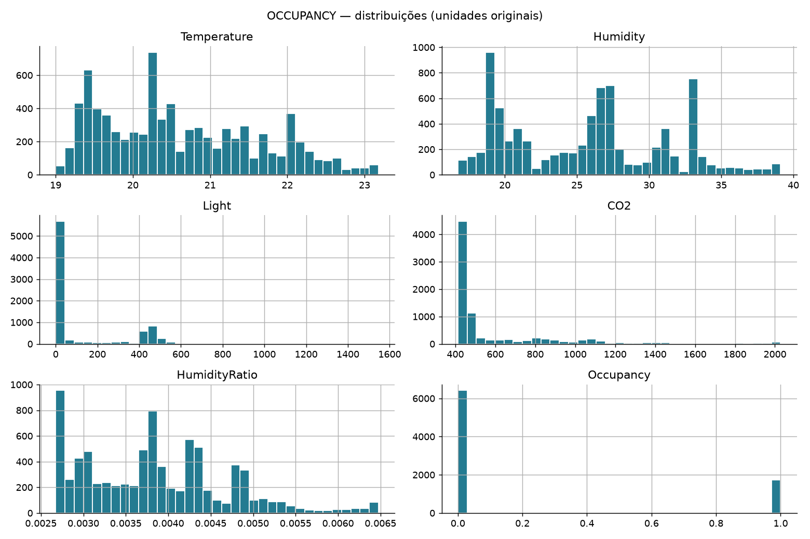
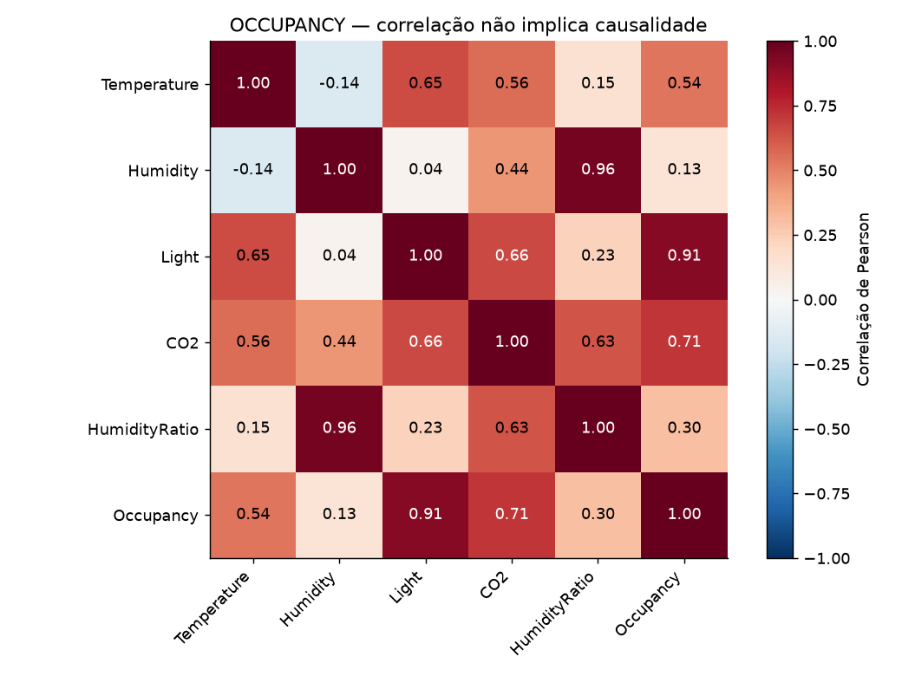
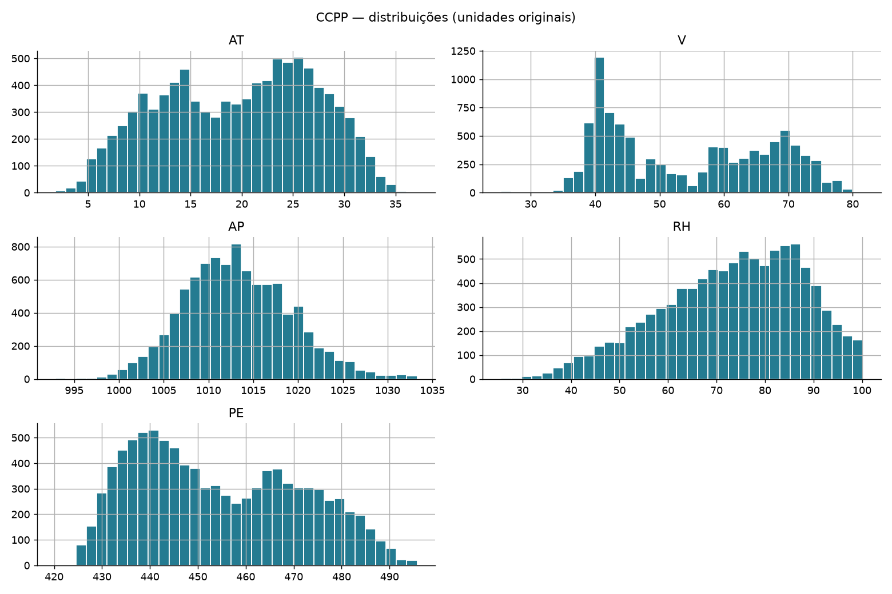
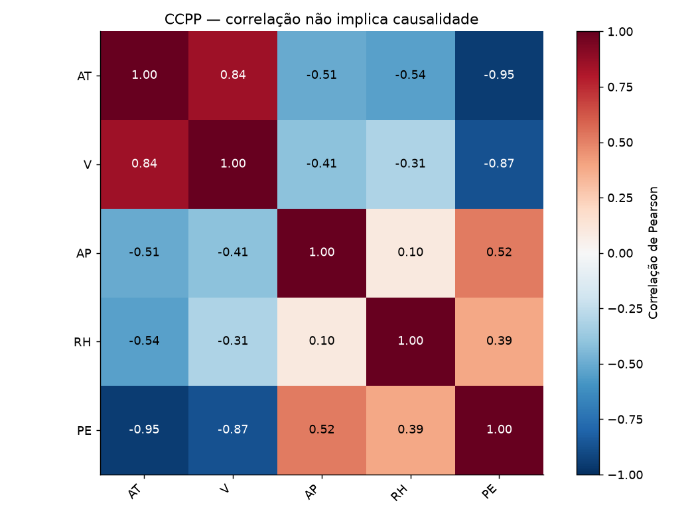
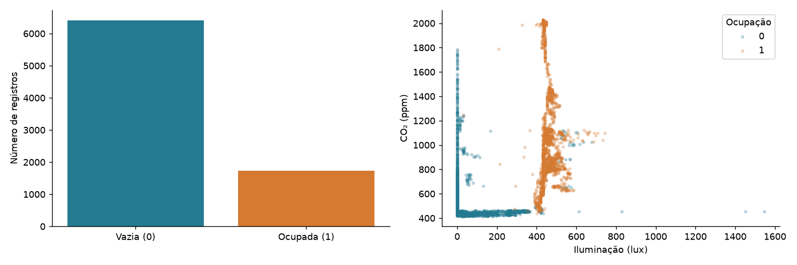
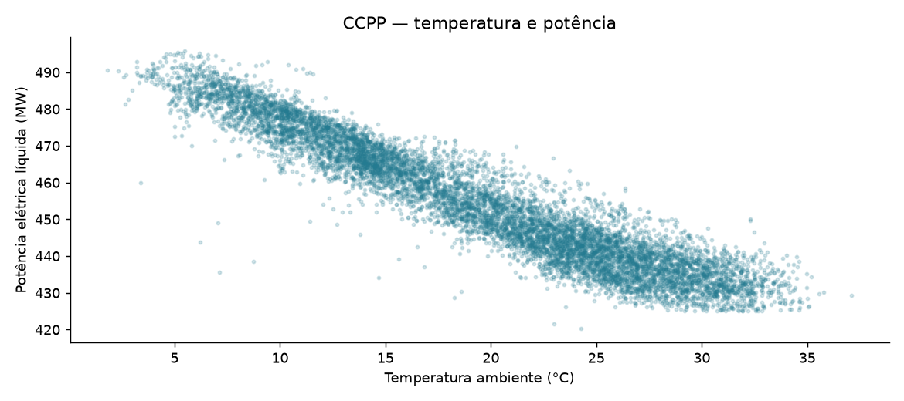

Inspeção descritiva inicial. Nenhum modelo foi treinado. Os arquivos originais foram preservados.
Occupancy: gráficos somente do treino original. CCPP: primeira aba, sem concatenar os cinco embaralhamentos. A divisão de treino/teste do CCPP ainda será feita; esta visão global não deve orientar seleção de modelos ou atributos.
datatraining.txt: 8,143 registros; 2015-02-04 17:51:00 a 2015-02-10 09:33:00.
datatest.txt: 2,665 registros; 2015-02-02 14:19:00 a 2015-02-04 10:43:00.
datatest2.txt: 9,752 registros; 2015-02-11 14:48:00 a 2015-02-18 09:19:00.
8,143 linhas; 7 colunas; 0 valores ausentes; 0 linhas duplicadas completas.
| date | Temperature | Humidity | Light | CO2 | HumidityRatio | Occupancy | |
|---|---|---|---|---|---|---|---|
| registro_original | |||||||
| 1 | 2015-02-04 17:51:00 | 23.180 | 27.272000 | 426.0 | 721.250000 | 0.004793 | 1 |
| 2 | 2015-02-04 17:51:59 | 23.150 | 27.267500 | 429.5 | 714.000000 | 0.004783 | 1 |
| 3 | 2015-02-04 17:53:00 | 23.150 | 27.245000 | 426.0 | 713.500000 | 0.004779 | 1 |
| 4 | 2015-02-04 17:54:00 | 23.150 | 27.200000 | 426.0 | 708.250000 | 0.004772 | 1 |
| 5 | 2015-02-04 17:55:00 | 23.100 | 27.200000 | 426.0 | 704.500000 | 0.004757 | 1 |
| 6 | 2015-02-04 17:55:59 | 23.100 | 27.200000 | 419.0 | 701.000000 | 0.004757 | 1 |
| 7 | 2015-02-04 17:57:00 | 23.100 | 27.200000 | 419.0 | 701.666667 | 0.004757 | 1 |
| 8 | 2015-02-04 17:57:59 | 23.100 | 27.200000 | 419.0 | 699.000000 | 0.004757 | 1 |
| 9 | 2015-02-04 17:58:59 | 23.100 | 27.200000 | 419.0 | 689.333333 | 0.004757 | 1 |
| 10 | 2015-02-04 18:00:00 | 23.075 | 27.175000 | 419.0 | 688.000000 | 0.004745 | 1 |
| 11 | 2015-02-04 18:01:00 | 23.075 | 27.150000 | 419.0 | 690.250000 | 0.004741 | 1 |
| 12 | 2015-02-04 18:02:00 | 23.100 | 27.100000 | 419.0 | 691.000000 | 0.004739 | 1 |
| 13 | 2015-02-04 18:03:00 | 23.100 | 27.166667 | 419.0 | 683.500000 | 0.004751 | 1 |
| 14 | 2015-02-04 18:04:00 | 23.050 | 27.150000 | 419.0 | 687.500000 | 0.004734 | 1 |
| 15 | 2015-02-04 18:04:59 | 23.000 | 27.125000 | 419.0 | 686.000000 | 0.004715 | 1 |
| tipo | ausentes | |
|---|---|---|
| date | datetime64[us] | 0 |
| Temperature | float64 | 0 |
| Humidity | float64 | 0 |
| Light | float64 | 0 |
| CO2 | float64 | 0 |
| HumidityRatio | float64 | 0 |
| Occupancy | int64 | 0 |
| Temperature | Humidity | Light | CO2 | HumidityRatio | Occupancy | |
|---|---|---|---|---|---|---|
| count | 8143.0000 | 8143.0000 | 8143.0000 | 8143.0000 | 8143.0000 | 8143.0000 |
| mean | 20.6191 | 25.7315 | 119.5194 | 606.5462 | 0.0039 | 0.2123 |
| std | 1.0169 | 5.5312 | 194.7558 | 314.3209 | 0.0009 | 0.4090 |
| min | 19.0000 | 16.7450 | 0.0000 | 412.7500 | 0.0027 | 0.0000 |
| 25% | 19.7000 | 20.2000 | 0.0000 | 439.0000 | 0.0031 | 0.0000 |
| 50% | 20.3900 | 26.2225 | 0.0000 | 453.5000 | 0.0038 | 0.0000 |
| 75% | 21.3900 | 30.5333 | 256.3750 | 638.8333 | 0.0044 | 0.0000 |
| max | 23.1800 | 39.1175 | 1546.3333 | 2028.5000 | 0.0065 | 1.0000 |


9,568 linhas; 5 colunas; 0 valores ausentes; 41 linhas duplicadas completas.
| AT | V | AP | RH | PE | |
|---|---|---|---|---|---|
| 0 | 14.96 | 41.76 | 1024.07 | 73.17 | 463.26 |
| 1 | 25.18 | 62.96 | 1020.04 | 59.08 | 444.37 |
| 2 | 5.11 | 39.40 | 1012.16 | 92.14 | 488.56 |
| 3 | 20.86 | 57.32 | 1010.24 | 76.64 | 446.48 |
| 4 | 10.82 | 37.50 | 1009.23 | 96.62 | 473.90 |
| 5 | 26.27 | 59.44 | 1012.23 | 58.77 | 443.67 |
| 6 | 15.89 | 43.96 | 1014.02 | 75.24 | 467.35 |
| 7 | 9.48 | 44.71 | 1019.12 | 66.43 | 478.42 |
| 8 | 14.64 | 45.00 | 1021.78 | 41.25 | 475.98 |
| 9 | 11.74 | 43.56 | 1015.14 | 70.72 | 477.50 |
| 10 | 17.99 | 43.72 | 1008.64 | 75.04 | 453.02 |
| 11 | 20.14 | 46.93 | 1014.66 | 64.22 | 453.99 |
| 12 | 24.34 | 73.50 | 1011.31 | 84.15 | 440.29 |
| 13 | 25.71 | 58.59 | 1012.77 | 61.83 | 451.28 |
| 14 | 26.19 | 69.34 | 1009.48 | 87.59 | 433.99 |
| tipo | ausentes | |
|---|---|---|
| AT | float64 | 0 |
| V | float64 | 0 |
| AP | float64 | 0 |
| RH | float64 | 0 |
| PE | float64 | 0 |
| AT | V | AP | RH | PE | |
|---|---|---|---|---|---|
| count | 9568.0000 | 9568.0000 | 9568.0000 | 9568.0000 | 9568.000 |
| mean | 19.6512 | 54.3058 | 1013.2591 | 73.3090 | 454.365 |
| std | 7.4525 | 12.7079 | 5.9388 | 14.6003 | 17.067 |
| min | 1.8100 | 25.3600 | 992.8900 | 25.5600 | 420.260 |
| 25% | 13.5100 | 41.7400 | 1009.1000 | 63.3275 | 439.750 |
| 50% | 20.3450 | 52.0800 | 1012.9400 | 74.9750 | 451.550 |
| 75% | 25.7200 | 66.5400 | 1017.2600 | 84.8300 | 468.430 |
| max | 37.1100 | 81.5600 | 1033.3000 | 100.1600 | 495.760 |



Luz e CO₂ podem estar associados à presença, mas iluminação artificial e ventilação também afetam os sensores. Amostras próximas no tempo exigem cuidado na futura validação.

Uma associação negativa entre temperatura e potência é compatível com o efeito da densidade do ar na turbina a gás; a correlação isolada não demonstra causalidade.